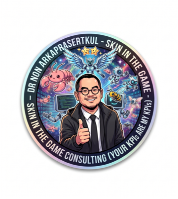

เอกสารฉบับนี้เป็น รายงานเบื้องต้น ของระบบ TKC Digital Twin — เครื่องมือสนับสนุนการตัดสินใจด้านทรัพยากรมนุษย์ ที่ผมในฐานะที่ปรึกษาอิสระพัฒนาให้ บริษัท เทิร์นคีย์ คอมมูนิเคชั่น เซอร์วิส จำกัด (มหาชน) ระหว่าง 17 เมษายน — 6 พฤษภาคม 2569 ตามขอบเขตของ Phase 1. ระบบเข้าใช้งานจริงแล้ว และอยู่ระหว่างการเก็บฟีดแบ็กเพื่อพัฒนา Phase 2.
ระบบเล่นเหมือน เกม Famicom Dragon Quest III ปี 1988 — พนักงานคือ party member ที่มี class และ stats; โครงการคือ quest ที่มี budget; การจัดทีมคือการวาง party order บน felt mat. กลไกเกมจริง ๆ ขับเคลื่อนการตัดสินใจจริง ๆ ของ HR และผู้บริหาร — ไม่ใช่ dashboard ที่แสดงข้อมูล แต่เป็น operating system ที่ทำให้การตัดสินใจเรื่องคน เห็นได้, วัดได้, เปรียบเทียบ prediction กับ reality ได้.
TKC เป็นบริษัท SI ขนาดกลางอายุ 20 ปี ที่กำลัง pivot จาก project-based revenue ไปสู่ recurring digital infrastructure (เป้าหมาย 40% recurring ภายใน 5 ปี). การ pivot นี้ต้องการคนเก่งและทีมที่ตั้งและเลิกได้เร็ว — แต่ระบบ HR ปัจจุบัน (Mango ERP + Excel) ทำหน้าที่ payroll ไม่ใช่ talent visibility. ผลคือ unknown unknowns เต็มไปหมด: คนเก่งลาออก, คนกลาง ๆ คงอยู่, การจัดทีมพึ่งการเมืองมากกว่าการประเมิน. ระบบนี้คือพื้นที่ทดลอง 6 เดือน ที่ทำให้เห็น "องค์กรเป็น digital twin" ก่อนตัดสินใจปรับโครงสร้างจริง.
| Command Center | tkc-digital-twin.fly.dev/command-center |
| e-Report (interactive) | tkc-digital-twin.fly.dev/report |
| Public Showcase | nonarkara.github.io/tkc-digital-twin-showcase |
ภายใน 6 เดือนของ sandbox model, roadmap ปัจจุบันชี้ไปที่: v8.6 MemPalace (LLM-powered relationship memory) · v8.7 Voice Check-in (Thai STT สำหรับผู้บริหาร) · v8.8 Mango ERP Sync (จบการคีย์ข้อมูลซ้ำ) · v9.x Lobby Graph (relationship network) · v10.x Two-Way Ratings (Uber-style ระหว่างพนักงานและ project lead). Roadmap นี้ ไม่ใช่ commitment — เป็น strategic intent ที่ปรับได้ตามฟีดแบ็กผู้ใช้จริง.
หมายเหตุ: รายงานฉบับนี้คือ เบื้องต้น (interim) — เป็นการสรุปสิ่งที่ส่งมอบใน Phase 1 ก่อนเข้าสู่ Phase 2. รายงานฉบับสมบูรณ์จะตามมาเมื่อ sandbox 6 เดือนเสร็จสิ้น และมีข้อมูลการใช้งานจริงเพียงพอที่จะวัดผล.
รายงานฉบับนี้เริ่มต้นในวันที่ 17 เมษายน 2569 เมื่อทีมงาน depa และคณะผู้บริหาร TKC นัดประชุมร่วมกันเป็นครั้งแรก เพื่อวินิจฉัยอาการของบริษัทเทคโนโลยีไทยอายุยี่สิบปีที่กำลังเปลี่ยนผ่าน จากระบบเดิมไปสู่ความท้าทายในยุคใหม่. ผมในฐานะที่ปรึกษาอิสระ ได้รับมอบหมายให้ร่วมวินิจฉัยและออกแบบกลไกใหม่ เพื่อช่วยให้ฝ่ายทรัพยากรมนุษย์และผู้บริหารระดับสูงสามารถมองเห็นและตัดสินใจได้แม่นยำขึ้น
ประเด็นที่จับใจความได้ในการประชุมครั้งแรก คือ HR ของ TKC กำลังจมอยู่กับ unknown unknowns — คำถามที่พวกเขายังบรรยายไม่ได้ด้วยซ้ำ เพราะข้อมูลที่จะใช้บรรยายยังไม่มีอยู่. คนเก่งกำลังลาออก, คนกลาง ๆ คงอยู่, ผู้บริหารแต่ละสายงานต่างมี view ของตัวเอง ที่ไม่ตรงกัน, ทุกการตัดสินใจเรื่องคนกลายเป็นการเมือง. ระบบสารสนเทศที่ TKC ใช้อยู่ขณะนั้น (Mango ERP + Excel) ตอบโจทย์การจ่ายเงินเดือนได้, แต่ไม่ตอบโจทย์การ "เห็นองค์กร" ในแบบ real-time.
การประชุมครั้งที่สองวันที่ 21 เมษายน เป็น management review ที่นำไปสู่ ข้อตกลง 6-month sandbox — เปิดโอกาสให้ผมสร้าง prototype, ทดสอบจริงกับคนจริงในองค์กร, และปรับเปลี่ยนตามฟีดแบ็กแบบรายสัปดาห์. ภายในหกเดือนจะไม่มีการประกาศโครงสร้างใหม่ในบริษัท จนกว่าผลลัพธ์จะชัดเจน. Sandbox นี้คือพื้นที่ทดลองที่ปกปิดต้นทุนทางการเมืองได้ — ความเสี่ยงต่ำ, ความเรียนรู้สูง.
รายงานฉบับนี้สรุป Phase 1 ที่ส่งมอบในวันที่ 6 พฤษภาคม 2569 — 19 วันหลังจากการประชุมครั้งแรก. ในช่วงเวลานี้ ผมพร้อมกับ Claude Code ได้พัฒนาระบบ TKC Digital Twin จากศูนย์ ขึ้นมาจนถึง v4.2 "Fluid Legend" และพร้อมส่งมอบเข้าใช้งานจริง.
TKC (บริษัท เทิร์นคีย์ คอมมูนิเคชั่น เซอร์วิส จำกัด (มหาชน)) เป็นองค์กรที่มุ่งเน้นการพัฒนาทรัพยากรบุคคลและการบริหารจัดการความรู้ ก่อตั้งราวปี 2545–2546. ปัจจุบันมีอายุการดำเนินงานกว่า 20 ปี, พนักงานราว 348 คน, ดำเนินธุรกิจ Vertically Integrated Digital Products ผ่าน 4 สายผลิตภัณฑ์หลัก — PromptPost, Thai CA, Data Center, และ D.I.D. (Delivery ID).
ในปีงบประมาณ 2568 รายได้รวมของ TKC อยู่ที่ราว 2,338 ล้านบาท (ตามรายงานบริษัท; -4.5% YoY ตามการประมาณภายใน) ขณะที่ Gross Margin ลดลงอย่างมีนัยสำคัญ — ทรุดเกือบครึ่ง. กำไรสุทธิลดลงเกือบ 20% YoY. ในจำนวนนี้ ส่วนใหญ่มาจากบริษัทร่วม ไม่ใช่ธุรกิจหลัก — หมายความว่า core operations ขององค์กรในปีนั้นแทบจะไม่ทำกำไร. เงินสดในมือลดลงราวครึ่งหนึ่ง, หนี้สินเพิ่มราวสองเท่า.
| มิติ | ค่า / สถานะ (ตัวแทน) |
|---|---|
| ประเภทธุรกิจ | Technology Services · IT Infrastructure · Digital Solutions |
| ขนาดองค์กร | ~200 พนักงาน · 3 สายงาน · 12 ฝ่าย |
| Revenue (ปีล่าสุด) | ระดับพันล้านบาท (ลดลง YoY) |
| Profit Margin | ต่ำกว่าเป้าหมายภายใน — margin pressure จาก project-based delivery |
| การรับรองมาตรฐาน | ISO 9001 · ISO 45001 · ISO/IEC 27001 |
| ทิศทางกลยุทธ์ | Pivot จาก project-based → recurring digital services |
องค์กรบริหารโดย MD และ DMD จำนวน 3 ตำแหน่ง — DMD CMO ดูแล Sales, Business Development, R&D; DMD Tech ดูแล PMO, Implementation, Engineering, AI CoE, Digital Services, และ Digital Product; DMD CFO ดูแล Accounting และ Financial. ตำแหน่ง DMD ที่ดูแล HR & GA, Org Management, Procurement และ IT ปัจจุบันยังว่างอยู่ — ซึ่งเป็นทั้งโอกาสและความท้าทาย: โอกาสคือไม่มีใครต่อต้านการเปลี่ยนแปลง, ความท้าทายคือไม่มีใครเป็นเจ้าของ HR ในระดับนโยบายอย่างเป็นทางการ. โครงสร้างผู้บริหารที่ผู้ถือหุ้นใหญ่คือผู้บริหารคนเดียวกัน หมายความว่า การ pivot เชิงกลยุทธ์ไม่มี agency mismatch.
องค์กรมีผลิตภัณฑ์หลักหลายตัวที่มี หลักร่วมกัน ที่น่าสังเกต — คือการ abstract identifier ออกจากรายละเอียดทางกายภาพ. ผลิตภัณฑ์ด้าน digital document, certificate authority, data center, และ location encoding ล้วนทำงานบนหลักการเดียวกัน: ทำให้ตัวระบุง่ายต่อมนุษย์, ทิ้งความซับซ้อนให้ระบบ. นี่คือ design philosophy ที่กลายเป็น business model.
การ pivot ขององค์กรจากบริษัทรับเหมา IT infrastructure ไปสู่ digital infrastructure platform company เกิดขึ้นพร้อมกันหลายจังหวะ:
| จังหวะ | สาระสำคัญ |
|---|---|
| Digital Trust Services | เปิดบริการด้าน digital certificate, identity verification, และ document management |
| Strategic Investment | ขยาย ICT portfolio ผ่านการลงทุนในบริษัทร่วม |
| Recurring Revenue Target | เป้าหมาย recurring revenue ให้สูงขึ้นอย่างมีนัยสำคัญ — ลดความผันผวนของ project-based income |
| Verifiable Credentials | พัฒนาระบบ Verifiable Credential + Digital Document Wallet สำหรับหน่วยงานรัฐและสถาบันการศึกษา |
การ pivot เหล่านี้มีลายเซ็นเดียวกัน — การออกจาก one-off project economy ไปสู่ recurring digital trust infrastructure. ลูกค้าเดิม (operator, government, enterprise) ยังคงอยู่, แต่ revenue model เปลี่ยน. ในแง่นี้ ระบบ Digital Twin ที่ผมพัฒนา ไม่ใช่ project-based deliverable — มันคือ recurring service ของผม ที่ทำงานสอดคล้องกับยุทธศาสตร์ที่องค์กรเลือกเอง.
เว็บไซต์ของ TKC ระบุ Smart Solutions อย่างน้อย 8 หมวด — Smart Building, Smart Utility, Smart Farming, Smart Logistics, Smart Learning, Smart Hospital, Cloud Services, Cybersecurity. หมวดเหล่านี้ ทั้งหมดต้องใช้คนเก่งที่มี skill mix หลายแบบในเวลาเดียวกัน — architecture, data engineering, embedded, network, security, business analyst. การจะปั้น Smart Solutions ได้พร้อมกัน 8 หมวด ไม่สามารถทำได้ด้วย org chart แบบ silo เดิม — ต้องการ capability engine ที่จัดทีมข้ามแผนกได้รวดเร็วและ data-driven. ระบบ TKC Digital Twin คือ MVP ของ capability engine นั้น.
จากการพูดคุยและการสังเกตในวันที่ 17 และ 21 เมษายน ผมระบุความตึงเครียดเชิงโครงสร้าง 5 ประการที่ฝังลึกในวิธีที่ TKC ดำเนินงาน. ระบบทุกชิ้นที่ผมพัฒนาออกมา ต้องตอบโจทย์ความตึงเครียดอย่างน้อยหนึ่งใน 5 นี้.
โครงการแต่ละชิ้นของ TKC ต้องการคนจากหลายแผนก — technical จาก Engineering, sales จาก BD, paperwork จาก Procurement, ฯลฯ. แต่โครงสร้างองค์กรล็อคทรัพยากรไว้ที่แผนก: "คนนั้นเป็นคนของ DMD Tech, อยากใช้ต้องขอ". ผลลัพธ์คือ project leads ต้องเล่นการเมืองเพื่อเข้าถึงคน, ไม่ใช่จัดสรรตามความเหมาะสม.
TKC เป็นบริษัท SI (System Integrator) — รายได้มาจาก project deliveries. ปัญหาคือเมื่อโครงการจบ ความรู้ที่สั่งสมระหว่างทางก็จบไปด้วย: ทีมแยกกัน, lessons learned ไม่ถูกบันทึก, project เดิมที่กลับมาในปีถัดไป ก็ต้องเรียนใหม่ทั้งหมด. Project-based business โดยธรรมชาติ ทำให้ทุนปัญญา (intellectual capital) ไม่ทบต้น.
คนเก่งของ TKC มีเยอะ — แต่ไม่มีระบบที่บอกว่าพวกเขาเก่งเรื่องอะไร, ระดับไหน, เปรียบเทียบกับใคร, และ มีช่องทางเติบโตอย่างไร. ผลลัพธ์คือคนเก่งที่ไม่มี visibility ลาออก, คนกลาง ๆ ที่ไม่มี challenge ก็คงอยู่. ไม่มี capability engine — ไม่มีกลไกระบบที่จัดการเรื่อง skill development และ career mobility อย่างเป็นระบบ.
Internal controls ที่ TKC ออกแบบไว้สำหรับการ audit ไม่ใช่สำหรับการแข่งขันในตลาดที่เปลี่ยนเร็ว. Procurement สำหรับ tools ใช้เวลาหลายสัปดาห์, การอนุมัติทีมโครงการต้องผ่าน 4 ระดับ. Governance เลยกลายเป็น brake, ไม่ใช่ guardrail. ทีมเก่งที่อยากเร่งจะติดหล่ม.
เมื่อมีไอเดียดี ๆ ใน TKC, มันยังต้องอาศัยการ "push" ของคน ๆ หนึ่ง ตั้งแต่ต้นจนปลายทาง — ไม่มีระบบที่จัดการให้ idea → prototype → deploy → measure → iterate เกิดขึ้นโดยอัตโนมัติ. ไอเดียดีที่ไม่มีคน push ก็ตาย. ไม่มี innovation engine — มีแต่ innovation initiatives.
การประชุมแรกระหว่าง depa × TKC เป็นการแนะนำตัวและวินิจฉัยเบื้องต้น. ประเด็นที่จับใจความได้:
การประชุมที่สองเข้มข้นกว่า — มี MD, DMD Tech, DMD CFO ร่วมประชุม. การประชุมนี้นำไปสู่การอนุมัติ 6-month sandbox model และยืนยัน 10 ความต้องการที่ผู้บริหารระบุชัดเจน:
| # | ความต้องการที่ผู้บริหารระบุ | ความเร่งด่วน |
|---|---|---|
| 01 | Competency / skill matrix แบบ ISO standards | Critical |
| 02 | Plan vs Actual FTE → P&L per project | Critical |
| 03 | Employee availability timeline | High |
| 04 | Project history pre-population (จาก Mango) | High |
| 05 | Input beyond skills (languages, certifications, soft skills) | Medium |
| 06 | Voice input (Thai STT) สำหรับผู้บริหาร | Medium |
| 07 | Director dashboard สำหรับจอ 72" | Medium |
| 08 | Director approval authority ใน matrix | Low |
| 09 | ERP sync (don't double-enter) | Critical |
| 10 | Integration กับ competency framework เดิม | High |
Phase 1 (17 เม.ย. — 6 พ.ค. 2569) ส่งมอบ 10 deliverables ที่ตอบความต้องการในข้อ 4.2 ทั้ง 10 ข้อ — บางข้อตอบ 100%, บางข้อวางรากฐานไว้แล้ว รอเชื่อมต่อกับข้อมูลจริง. ตารางต่อไปนี้แสดงการ map TOR → feature → status:
| # | ความต้องการตาม TOR | Feature ที่ส่งมอบ | Status |
|---|---|---|---|
| 01 | Competency / skill matrix | Capability Matrix screen + token-economy.ts + fit-matrix.ts | ส่งมอบ |
| 02 | Plan vs Actual FTE → P&L | Formation Engine + project_allocations + budget-bar UI | ส่งมอบ |
| 03 | Employee availability timeline | Formation screen แสดง FTE allocations + AvailabilityTimeline component | ส่งมอบ |
| 04 | Project history pre-population | Schema + import API พร้อมแล้ว, รอ Sheets feed จาก PMO | วางรากฐาน |
| 05 | Languages, certifications, soft skills | employee_profile_facets table + skill_assessments + Codex | ส่งมอบ |
| 06 | Voice input (Thai STT) | Reserved สำหรับ v8.6 MemPalace | กำหนดถัดไป |
| 07 | 72" director dashboard | Cockpit screen รองรับ, รอ UX tuning ที่หน้างาน | ส่งมอบ + tune |
| 08 | Director approval authority | Backend lock mechanism พร้อม, นโยบายรอ DMD CFO | วางรากฐาน |
| 09 | ERP sync | Schema รองรับ, รอ Mango export endpoint | วางรากฐาน |
| 10 | Existing competency framework | competency_standards table + sortable Workshop drawer | ส่งมอบ |
นอกเหนือจาก 10 ข้อข้างต้น ผมยังส่งมอบ feature เพิ่มเติม นอกขอบเขต TOR ที่ผมมองว่าจำเป็นต่อการใช้งานจริง: The Tome Printer (พิมพ์ประวัติพนักงาน), Daily Briefing System, Obsidian Knowledge Export, Game Balance sliders, GitHub Pulse panel, และ Codex (in-app operating manual). ทุกชิ้นเป็นไปตามหลัก "TOR เป็นพื้น, ไม่ใช่เพดาน" — Their KPIs are my KPIs.
HR SaaS ที่ผมและ TKC เคยพิจารณาก่อนหน้านี้ มีหน้าตาเหมือนกันหมด — rounded cards, gradient buttons, vague metrics. ไม่มีตัวไหนที่ทำให้ผู้บริหารหรือพนักงาน "อยากเปิดใช้". เกม Famicom ปี 1988 อย่าง Dragon Quest III ทำได้. เพราะ metaphor มันชัดและมือมันได้สัมผัส.
| โลกจริง | ในเกม TKC Digital Twin |
|---|---|
| พนักงาน | Party member ที่มี stats (STR/INT/WIS/CHA/DEX/CON) และ class (archetype) |
| โครงการ | Quest ที่มี objective + budget + reward (XP) |
| การจัดทีม | Party order บน felt mat (front/mid/back) |
| Salary cap | Stack of paper money ที่ค่อย ๆ พร่องไปเมื่อ assign คน |
| การเปลี่ยนสายงาน | Class change ที่ Alltrades Abbey — stats ลดครึ่ง, spells ยังอยู่ |
| Burnout | HP ลดลง |
| การลาออกจากบริษัท | The Tome — พิมพ์ปกแข็งบันทึกประวัติทั้งชีวิตการทำงาน |
ระบบทุกหน้าจอบันทึกตัวบ่งชี้ของแรงจูงใจ 4 มิติ: Compensation (เงินและความอยู่รอด — Herzberg hygiene), Cause (เรื่องราวและศักดิ์ศรี — งานที่มีความหมาย), Career (การเติบโตและ flow — Csikszentmihalyi), Community (ความเชื่อมโยงและสุขภาพจิต). หากตัวใดต่ำเกินไป ตัวอื่นจะค้ำไม่ไหว — ระบบจึงต้องดูทั้ง 4 พร้อมกัน.
ระบบ TKC Digital Twin ออกแบบตามแบบจำลอง cartridge ของ Famicom 1988 — self-contained, แยก concern ระหว่าง rules, truth, และ readable save. Metaphor ไม่ใช่แค่สวย — มันบังคับให้สถาปัตยกรรมเป็นระเบียบ.
| ส่วนของ Cartridge | ในระบบนี้คืออะไร |
|---|---|
| ROM chip (กฎและภาพ) | Next.js 16 + React 19 + TypeScript application |
| Battery-backed save RAM (ความจริง) | Neon PostgreSQL — source of truth |
| Memory card (save ที่อ่านได้) | Google Sheets — shadow mirror, 21 tabs |
ระบบนี้ทำงานได้ด้วยตัวเองโดยไม่ต้องพึ่งบริการภายนอกอื่นนอกจาก Neon และ Sheets: ไม่มี analytics SaaS, ไม่มี tracking pixels, ไม่มี third-party auth provider. เหมือน cartridge ที่เสียบเข้ากับเครื่องแล้วใช้งานได้. การพึ่งบริการภายนอกน้อย = ความเสี่ยงต่ำ + ค่าใช้จ่ายน้อย + ความอิสระสูง.
Command Center (เข้าได้ที่ /command-center)
เป็นหน้าจอเดียวที่มี 8 sub-screens สลับด้วยปุ่มเลข 1–8 บนคีย์บอร์ด —
ตามแบบฉบับ DQ3 ที่ผู้เล่นกดเลขเพื่อเลือกคำสั่ง.
| KEY | ชื่อ | หน้าที่ |
|---|---|---|
1 · C | Cockpit · ห้องควบคุม | KPI ภาพรวมองค์กร, Four Pillars (Belonging/Purpose/Transcendence/Story), Flow Distribution, GitHub Pulse |
2 · F | Formation · จัดทีม | Drag-and-drop จัดทีมบน felt mat, salary cap visualization, party order (front/mid/back), chemistry score, predicted readiness |
3 · N | Ninja · สกวอด | Squad readiness engine — candidate matching, skill-gap analysis, mission configuration |
4 · M | Matrix · แมทริกซ์ | Capability heatmap — supply (org skills) vs demand (project requirements). ระบุ gaps ก่อน failures |
5 · R | Roster · รายชื่อฮีโร่ | Wall of 348 employee cards. Warhol principle — repetition = the company |
6 · S | Signals · สัญญาณ | Deployment history, prediction vs reality, the feedback loop |
7 · L | Lobby · โลบบี้ | Real-time check-in world พร้อม pixel characters เดินในแผนที่ |
8 · G | Ledger · บัญชีระบบ | Admin — Sheets health, Game Balance sliders, Obsidian export, audit log |
/tome/[employee_id]) — พิมพ์ปกแข็งบันทึกประวัติพนักงานเมื่อครบวาระ. การจากไปที่เป็นเกียรติ ไม่ใช่ "ซองขาว"/check-in/[employee_id]) — narrative weekly entry (The Chronicler's Scroll)หลักการออกแบบที่บังคับใช้ทั้งโครงการ: ไม่มีมุมมน (border-radius: 0 ทั่วทั้ง app), ไม่มี gradient fills, ไม่มี drop shadows (ยกเว้น focus ring), ไม่มี Roboto / Inter / Poppins (fonts ที่ AI templates ใช้แล้วทำให้ดูเหมือน boilerplate). ใช้ IBM Plex Sans Thai (non-looped) เป็นหลัก — เพราะ Thai readers อ่านชิ้นที่หัวเล็กแล้วรู้สึกเป็นไทยแท้, หัวใหญ่ทำให้ดูเหมือนสื่อสำหรับชาวต่างชาติเรียนภาษา.
Database อยู่บน Neon (Serverless PostgreSQL, region Singapore). มีทั้งหมด 28 tables ครอบคลุมทุก domain ของระบบ:
| กลุ่ม | ตารางหลัก |
|---|---|
| Org structure | divisions, departments, employees, employee_attributes |
| Skill & competency | skill_assessments, competency_standards, employee_profile_facets |
| Projects & quests | projects, quests, project_allocations, project_outcomes |
| Teams | team_compositions, team_snapshots, quest_members |
| People ops | vocation_changes, support_actions, evaluations |
| Behavioral signals | check_ins, attendance_log, interactions, events |
| Game state | game_adjustments, balance_cache, points_log |
| Resources | resources (ทรัพยากรนอกเหนือคน — ของอะไหล่/ไลเซนส์/DC racks) |
API ครอบคลุมทุก action ของระบบ. Route categories:
| Module | หน้าที่ |
|---|---|
snap-engine.ts | Team scoring, skill matching, snap rules |
game-loop.ts | Budget, salary cap, 10x viability rule, Moneyball verdicts |
team-chemistry.ts | 4-component chemistry (coverage, diversity, synergy, cohesion) |
fit-matrix.ts | Skill dimensions × archetype fit matrix |
talent-engine.ts | Flight risk, pair compatibility, support needs |
token-economy.ts | Salary cap, point economy, Archetype enum |
baseline-engine.ts | Competency baseline scoring |
balance-cache.ts | Game balance state cache |
sentiment-engine.ts | Morale / sentiment tracking from check-ins |
sheets-mirror.ts | Fire-and-forget Sheets sync (21 tabs) |
คะแนน contribution ของพนักงานวัดด้วยสูตร Fantasy Football inspired:
แรงบันดาลใจจาก Ritz-Carlton's Credo. คะแนน 4 มิติ ๆ ละ 25%: Belonging (รู้สึกเป็นส่วนหนึ่ง), Purpose (เข้าใจเหตุผลของงาน), Transcendence (รู้สึกว่างานสร้างคุณค่าใหญ่กว่าตัวเอง), Story (รู้สึกมีเรื่องราวที่อยากเล่า). Credo Score เป็น compass ไม่ใช่ score — บอกแนวโน้ม ไม่ตัดสิน.
พนักงานทุกคนมี HP / MP / XP / Stamina ที่ tracked over time: HP สำหรับสุขภาพจิต (ลดลงเมื่อ workload หนักเกิน), MP สำหรับพลังงานเชิงสร้างสรรค์ (รีเซ็ตเมื่อพักผ่อน), XP สำหรับการเติบโต (เพิ่มขึ้นจาก quest completion + streak), Stamina สำหรับ resilience (วัดจาก consistent delivery).
readiness = coverage × 0.40 + quality × 0.25 +
party_split × 0.05 + chemistry × 0.15 + morale × 0.15
party_split_pct คือ DQ3 EXP-split — slot ที่ overstaffed
จะ dilute per-head contribution. ระบบจึงลงโทษการ "hoarding" คนเก่งโดยไม่ตั้งใจ.
| Day | Reward | หมายเหตุ |
|---|---|---|
| 1–6 | +5 XP/day | พื้นฐาน |
| 7 | +25 XP | Weekly milestone |
| 14 | +50 XP | Badge |
| 30 | +100 XP | Monthly milestone |
| 90 | +250 XP | Quarter |
| 365 | +1000 XP | Year — permanent achievement |
| random 1-in-7 | ×3 to ×5 | Variable Ratio bonus |
Google Sheets ในระบบนี้ ไม่ใช่ backup, ไม่ใช่ export tool. มันคือ memory card ของ cassette — ที่เก็บความจริงในรูปแบบที่มนุษย์อ่านและเขียนได้. HR เปิด Sheet, เห็นทุกอย่าง, แก้ cell, ใส่สูตร, ทำ pivot — ระบบโค้งเข้าหาผู้ใช้, ไม่ใช่ผู้ใช้โค้งเข้าหาระบบ.
| # | Tab | ข้อมูลใน Tab |
|---|---|---|
| 01 | Players | พนักงาน 348 คน · stats / archetype / salary / dept |
| 02 | Projects | โครงการ · code / budget / slots / priority |
| 03 | Teams | ทีมที่ save แล้ว · chemistry / fit / overall score |
| 04 | CheckIns | Weekly narrative entries (The Chronicler's Scroll) |
| 05 | Events | Game event log (level-up, vocation change, awards) |
| 06 | League | Director leaderboard scaffolding |
| 07 | DeptHeat | Department-level capability heatmap |
| 08 | AttrHistory | Time-series ของการเปลี่ยน stat ของพนักงาน |
| 09 | NinjaSquads | Saved squad readiness configs |
| 10 | SquadEvents | Squad mission history |
| 11 | SkillCatalog | Master skill taxonomy |
| 12 | InterviewLog | Hiring + interview notes |
| 13 | MatrixScenarios | Saved capability-matrix scenarios |
| 14 | Formation | Project allocations · encoded empid@dim@order |
| 15 | FormationEvents | Formation change audit log |
| 16 | Resources | Non-human capacity (DC racks, GPUs, licences) |
| 17 | Attendance | Daily check-in lobby punches |
| 18 | Interactions | Cross-employee social-graph signals |
| 19 | Memos | Director memos / commentary |
| 20 | VocationChanges | Alltrades Abbey reskilling ledger |
| 21 | GameAdjustments | Game Balance slider history (จาก Ledger) |
ทุก writing API route เขียนลง Postgres ก่อน, แล้ว ยิง mirror ลง Sheets แบบ fire-and-forget — ถ้า Sheets ล่ม Postgres ก็ยังเขียนสำเร็จ. Silent no-op rule: ถ้าไม่มี credentials ระบบจะเงียบ ไม่ throw error. Postgres = truth. ถ้า Sheets และ Postgres ขัดแย้งกัน, Postgres ชนะ.
GET /api/sheets/health → ok: true · enabled: true ·
21 tabs · 0 missing. Service account
tkc-dashboard-sheets@tkcx-494310.iam.gserviceaccount.com
ทำงานปกติทั้งบน local และ production.
7 archetypes ใช้ canon ของ Famicom DQ3 ปี 1988 (ไม่ใช่ remake): Hero (captain, gold), Soldier (ops, green), Wizard (tech, blue), Pilgrim (scout, purple), Merchant (sales, red), Fighter (junior IC, orange), Goof-Off (wildcard, pink). แต่ละคนได้ archetype จาก department หรือสามารถเปลี่ยนได้ที่ Alltrades Abbey.
4 Skill Dimensions: Technical, Soft Skill, Outsource Management, In-House Execution. 3 Personality Modifiers: Resilience, Authenticity, Adaptability. ทั้งหมดวัดด้วย attribute axes 6 แกน ที่อ้างอิงจาก D&D / RPG canon (STR/INT/WIS/CHA/DEX/CON).
ตัวอย่าง sprite ใช้ HTML5 Canvas render แบบ procedural. 32×32 pixel · dual silhouette (m/f) per archetype · 6 palette slots (hat / shirt / pants / shoes / gloves / weapon) — ละ 8 colours รวมประมาณ 260,000 combinations ที่ deterministic จาก employee ID ผ่าน FNV-1a hash. พนักงานคนเดียวกันจะได้ sprite เดิมทุกครั้งที่ render.
Engine ทำงานสมบูรณ์แล้ว — สร้างจาก 1990s Famicom DQ3 console. ขั้นถัดไปคือเปลี่ยน mock data → real data: ผมจะเข้าไปทำงานกับคนจริงที่ TKC, feed ข้อมูลให้ Claude Code, แล้วระบบจะดีขึ้นเรื่อย ๆ ทุก installment.
| Version | Codename | เนื้อหา |
|---|---|---|
v8.6 | MEMPALACE | LLM-powered relationship memory — local-first AI ที่เรียนรู้ว่าใครเข้าขากับใคร |
v8.7 | VOICE CHECK-IN | Thai STT daily input — ผู้บริหารพูด, engine ถอดความและจัดเรียง |
v8.8 | MANGO ERP SYNC | End the double-entry — pull project history จาก Mango ผ่าน Sheets + Apps Script |
v9.x | LOBBY GRAPH | Relationship graph จาก mock + interactions data ใน Lobby screen |
v10.x | TWO-WAY RATINGS | Uber-style ratings ระหว่าง employee ↔ project lead |
v11.x | WEEKLY GANTT | Auto-nudge สำหรับ project leads ที่ Gantt ไม่ตรงกับความเป็นจริง |
Roadmap นี้ ไม่ใช่ commitment — มันเป็น strategic intent ที่จะถูก re-prioritize ทุกครั้งที่ผู้บริหารคนหนึ่งใช้ระบบจริงและบอก wishlist. ระบบโต้ขึ้นเข้าหาบริษัท ไม่ใช่บริษัทโต้ขึ้นเข้าหาระบบ.
ส่วนนี้ผมรวบรวมคำถามที่คาดว่าทีม HR, ผู้บริหารระดับสูง, และคณะกรรมการตรวจสอบจะถามเมื่อเห็นระบบนี้เป็นครั้งแรก — พร้อมคำตอบที่ตรงไปตรงมา. คำถามถูกจัดเรียงเป็น 5 หมวด เพื่อให้อ่านได้ง่ายและกลับมาอ้างอิงได้. หลายข้อจะถูกตอบลึกขึ้นใน Phase 2 เมื่อมีข้อมูลการใช้งานจริง.
Phase 1 ส่งมอบในวันที่ 6 พฤษภาคม 2569 — 19 วันหลัง kickoff.
ระบบเข้าใช้งานจริงผ่าน tkc-digital-twin.fly.dev,
มีพนักงาน 348 คนใน database, 8 โครงการ, 21 Sheets tabs ทำงาน sync,
8 หน้าจอใน Command Center, และ engine คำนวณ ICA, Credo, Formation,
Capability Matrix ครบถ้วน.
คำมั่นของผมต่อ TKC ในระยะถัดไป:
คำถามสุดท้ายที่ผมยังหาคำตอบไม่ได้ — และไม่อยากหาเอง — คือ: ทีม HR ของ TKC จะใช้ระบบนี้แล้วรู้สึกว่าได้คืนเวลาที่จมในเอกสารกลับมาบ้างไหม? คำตอบจะปรากฏหลังเดือนแรกของการใช้งานจริง. ผมจะรอวัด.
| Command Center | https://tkc-digital-twin.fly.dev/command-center |
| e-Report | https://tkc-digital-twin.fly.dev/report |
| e-Report (static) | https://nonarkara.github.io/tkc-digital-twin-showcase/ |
| Showcase repo | https://github.com/Nonarkara/tkc-digital-twin-showcase |
| Google Sheets | docs.google.com/spreadsheets/d/1LR8t7Qx…3PJYuttE |
| Rev | Codename | Highlight |
|---|---|---|
v1 | Sheets | Manual HR tracking ใน spreadsheets |
v2 | Command Center | Next.js + Postgres dashboard wrapped รอบ Sheets |
v3 | Cassette | DQ3 archetypes + 32×32 sprites + Formation tab |
v3.1 | Party Split | EXP-split readiness penalty |
v3.2 | Alltrades | Vocation change ledger |
v3.3 | Front Row | Party order (front/mid/back) |
v4.2 | Fluid Legend | SNES-grade 64×64 sprites · Lobby social graph · URL routing |
| Framework | Next.js 16 + React 19 + TypeScript 5 |
| Styling | Tailwind v4 + design tokens (no shadcn defaults) |
| Database | Neon PostgreSQL (serverless · Singapore) |
| Shadow Mirror | Google Sheets (21 tabs · service account) |
| Knowledge Export | Obsidian Vault (348 dossiers) |
| Animation | Framer Motion (snap-only, no per-item staggers) |
| Sprite Engine | HTML5 Canvas (procedural 32×32) |
| Fonts | IBM Plex Sans Thai (non-looped) · JetBrains Mono · Press Start 2P |
| Hosting | Fly.io (Singapore) · auto-sleep on idle |
นน อัครประเสริฐกุล (Dr. Non Arkaraprasertkul) — ที่ปรึกษาอิสระด้าน Talent Transformation ภายใต้แนวคิด Skin in the Game — Their KPIs are my KPIs. ทำงานกับ TKC ตั้งแต่ 17 เมษายน 2569. การมีส่วนร่วมเป็นแบบ open-ended; Phase ถัดไปจะส่งมอบเมื่อ installment ถัดไปพร้อม.
— END OF INTERIM BRIEF —
เอกสารฉบับนี้จัดทำเมื่อ 6 พฤษภาคม 2569 · v4.2 Fluid Legend · Phase 1 Interim